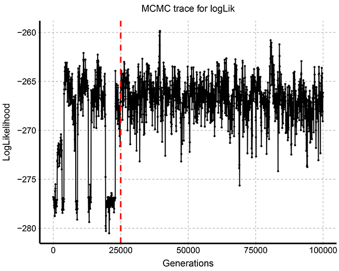
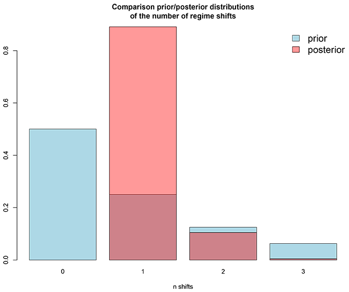
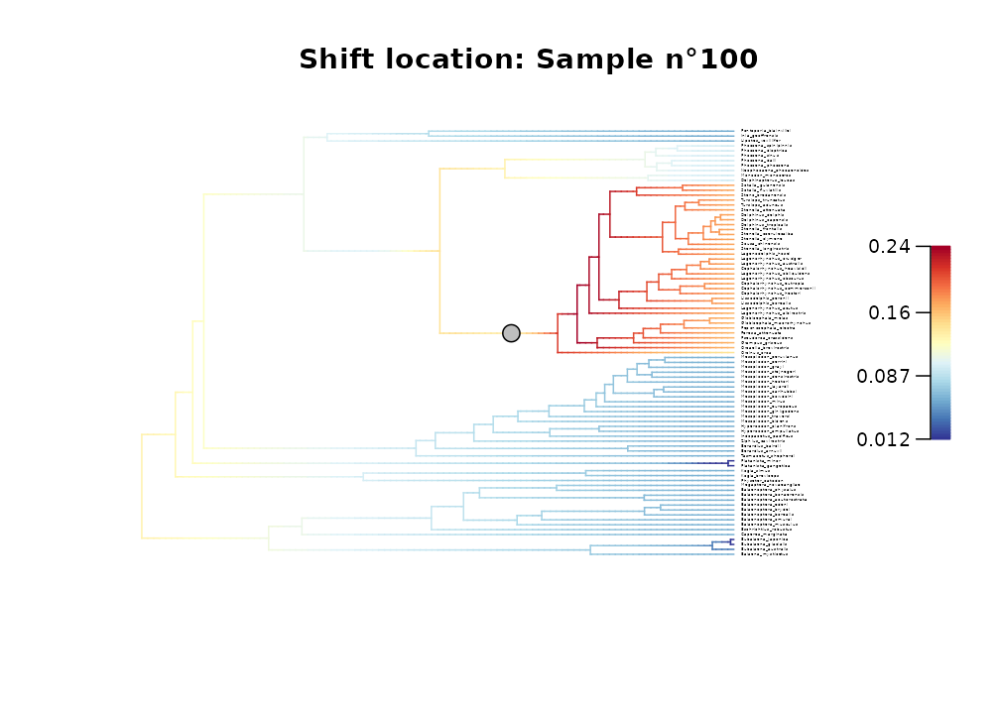
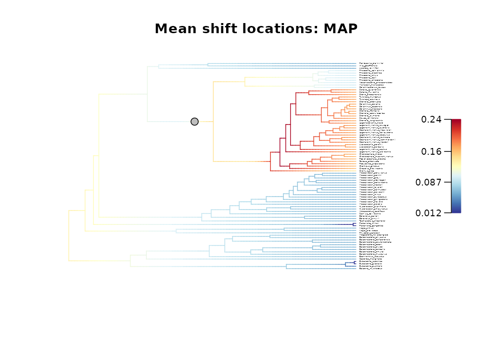

Model diversification dynamics
Maël Doré
2025-09-26
Source:vignettes/model_diversification_dynamics.Rmd
model_diversification_dynamics.Rmd
This vignette presents the different options available to model
diversification dynamics with BAMM
within deepSTRAPP.
BAMM (Bayesian Analysis of Macroevolutionary Mixtures) is a fully independent C++ software developed by Daniel L. Rabosky. You need to install BAMM first on your machine to be able to run this section of deepSTRAPP.
Source: Rabosky, D. L. (2014). Automatic detection of key
innovations, rate shifts, and diversity-dependence on phylogenetic
trees. PloS one, 9(2), e89543.
DOI: 10.1371/journal.pone.0089543
BAMM website: http://bamm-project.org/
deepSTRAPP builds upon BAMM and functions from
R package [BAMMtools] to offer a simplify framework to
model and visualize diversification dynamics on a
time-calibrated phylogeny.
## Goal: Map evolution of diversification rates and regime shifts on the time-calibrated phylogeny
# Run a BAMM (Bayesian Analysis of Macroevolutionary Mixtures)
# Step 1/ Set BAMM - Record BAMM settings and generate all input files needed for BAMM.
# Step 2/ Run BAMM - Run BAMM and move output files in dedicated directory.
# Step 3/ Evaluate BAMM - Produce evaluation plots and ESS data.
# Step 4/ Import BAMM outputs - Load `BAMM_object` in R and subset posterior samples.
# Step 5/ Clean BAMM files - Remove files generated during the BAMM run.
# All these actions are performed by a single function: deepSTRAPP::prepare_diversification_data()
?deepSTRAPP::prepare_diversification_data()
# This function perform a single BAMM run to infer diversification rates and regime shifts.
# Due to the stochastic nature of the exploration of the parameter space with MCMC process,
# best practice recommend to ran multiple runs and check for convergence of the MCMC traces,
# ensuring that the region of high probability has been reached by your MCMC runs.
## Parametrize BAMM
# BAMM accepts numerous arguments that control the modeling process.
# The main arguments are listed in the function deepSTRAPP::prepare_diversification_data().
# Additional arguments can be provided as a named list under 'additional_BAMM_settings'.
# To see all available settings, load and print the BAMM template file provided within deepSTRAPP.
data(BAMM_template_diversification)
print(BAMM_template_diversification)
## Load time-calibrated phylogeny
library(phytools)
data(whale.tree)
# Source: Steeman, M. E., M. B. Hebsgaard, R. E. Fordyce, S. Y. W. Ho, D. L. Rabosky,
# R. Nielsen, C. Rahbek, H. Glenner, M. V. Sorensen, and E. Willerslev (2009)
# Radiation of extant cetaceans driven by restructuring of the oceans. Systematic Biology, 58, 573-585.
## Run BAMM workflow with deepSTRAPP
whale_BAMM_object <- prepare_diversification_data(
BAMM_install_directory_path = "./software/bamm-2.5.0/", # To provide path to BAMM directory
phylo = whale.tree,
prefix_for_files = "whale",
seed = 1234, # Set seed for reproducibility
numberOfGenerations = 10^5, # Set low for the example (Default = 10^7)
# Set the overall proportion of terminals in the phylogeny compared to
# the estimated overall richness in the clade
globalSamplingFraction = 1.0,
# The path to the `.txt` file used to provide clade-specific sampling fractions.
# Here, we use a global sampling fraction.
sampleProbsFilename = NULL,
# Set the expected number of regime shifts. It acts as an hyperparameter controlling
# the exponential prior distribution used to modulate reversible jumps across
# model configurations in the rjMCMC run.
# When set to 'NULL', an empirical rule is used to define this value: 1 regime shift expected
# for every 100 tips in the phylogeny, with a minimum of 1.
expectedNumberOfShifts = NULL,
# Set the frequency in which to write the event data to the output file =
# the sampling frequency of posterior samples.
# When set to `NULL`, the frequency is set such as 2000 posterior samples
# are recorded (before removing the burn-in).
eventDataWriteFreq = NULL,
# Proportion of posterior samples removed from the BAMM output to ensure that the remaining samples
# where drawn once the equilibrium distribution was reached.
burn_in = 0.25,
# Number of posterior samples to extract, after removing the burn-in,
# in the final `BAMM_object` to use for downstream analyses.
nb_posterior_samples = 1000,
# List of additional arguments as found in `BAMM_template_diversification`.
additional_BAMM_settings = list(),
# Output directory used to store input/output files generated
BAMM_output_directory_path = "./BAMM_outputs/",
keep_BAMM_outputs = TRUE, # To keep the BAMM_output directory after the run
# Controls the definition of 'core-shifts' used to distinguish across configurations
# when identifying the most frequent regime shift configuration (MAP) across samples.
MAP_odd_ratio_threshold = 5,
# To include (or not) the evaluation step and produce MCMC trace, ESS,
# and prior/posterior comparisons for expected number of shifts.
skip_evaluations = FALSE,
plot_evaluations = TRUE, # To plot the three outputs of the evaluation step
# To save in a table (ESS), and PDFs (MCMC trace, and prior/posterior comparisons
# for expected number of shifts) the evaluation outputs.
save_evaluations = TRUE)
## Inspect evaluations
# This function produces two evaluation plots and one table to check the quality of the BAMM run.
# 1/ Plot the MCMC trace = evolution of logLik across MCMC generations.
# Output file = 'MCMC_trace_logLik.pdf'.
# 2/ Compute the Effective Sample Size (ESS) across posterior samples (after removing burn-in)
# using coda::effectiveSize().
# This is a way to evaluate if your MCMC runs has enough generations to produce robust estimates.
# Ideally, ESS should be higher than 200. Output file = 'ESS_df.csv'.
# 3/ Plot the comparison of prior and posterior distributions of the number of regime shifts
# with BAMMtools::plotPrior. Output file = 'PP_nb_shifts_plot.pdf'.
# A good value for expectedNumberOfShifts is one with high similarities between the distributions
# hinting that the information in the data coincides
# with your expectations for the number of regime shifts.
# The best practice consists in trying several values to control if it affects or not the final output.
# An example of these plots and table is shown below:
#> Effective Sample Size (ESS) across posterior samples
#> ESS_logLik ESS_logPrior ESS_N_shifts ESS_eventRate ESS_acceptRate
#> 277.0866 301.4833 138.8292 1158.0859 235.7291
### Explore diversity dynamics
# Load directly the result
data(whale_BAMM_object, package = "deepSTRAPP")
# Explore output
str(whale_BAMM_object, 1)
# Record the regime shift events and macroevolutionary regimes parameters across posterior samples
str(whale_BAMM_object$eventData, 1)
# Mean speciation rates at tips aggregated across all posterior samples
head(whale_BAMM_object$meanTipLambda)
# Mean extinction rates at tips aggregated across all posterior samples
head(whale_BAMM_object$meanTipMu)
### Explore posterior probabilities of regime shifts
# Each posterior sample has its own diversification history with
# time-varying diversification rates and regime shift locations.
# To visualize the expected location of regime shifts,
# we compute the Marginal posterior Shift Probability (MSP) of each branch,
# as the probability to observe a regime shift on each individual branch across all posterior samples.
# For more details, see `[BAMMtools::marginalShiftProbsTree()]`.
# This branch-specific information is stored as phylogenetic tree with branch scaled to their MSP score.
whale_BAMM_object$MSP_tree # Tree with branch scaled to MSP scores.
# Plot the MSP tree
plot(whale_BAMM_object$MSP_tree, cex = 0.25)
title(main = "Marginal posterior Shift Probabilities per branches")
# Please note that a series of long branch does not indicate that a regime shift
# is likely to occur on each branch, but rather that the location of the regime shift
# is uncertain and shared across closely related branches, which is illustrated by the next plots.
# This information can be used to adjust the size of the symbols showing the location
# of regime shifts on the tree using the `adjust_size_to_prob = TRUE` argument
# in `deepSTRAPP::plot_BAMM_rates()`.
### Define regime shift location
# deepSTRAPP allows to plot the location of regime shifts over mean diversification rates mapped on a phylogeny
?deepSTRAPP::plot_BAMM_rates()
# Three options are available based on the regime shifts recorded across all BAMM posterior samples
# `index` = Posterior sample index.
# Used to select a unique posterior BAMM sample and map regime shifts as observed in this sample.
# `MAP` = Maximum A Posteriori probability.
# Shows location of regime shifts according to the samples exhibiting
# the Maximum A Posteriori probability (MAP) configuration = the most frequent configuration
# for the location of regime shifts across all BAMM posterior samples.
# This only accounts for which branches the regimes occur on, not the location of shifts
# along the branches.
# For more details, see `[BAMMtools::credibleShiftSet()]`.
# Only regime shifts with an odd-ratio of marginal posterior shift probability / prior shift probability
# higher than the threshold provided in the `MAP_odd_ratio_threshold` argument (default = 5)
# are considered as core-shifts and used to identify the MAP configuration.
# The location of the regimes along each branch is then averaged across all the identified MAP samples.
# Provide the indices of all MAP samples
whale_BAMM_object$MAP_indices
# BAMM object summarizing diversification dynamics for MAP samples only. Used to plot the MAP mean rates.
whale_BAMM_object$MAP_BAMM_object
# `MSC` = Maximum Shift Credibility.
# Shows location of regime shifts according to the samples exhibiting
# the Maximum Shift Credibility (MCS) configuration = the configuration with the highest Posterior
# probability to occur as computed from the product of the marginal branch-specific shift probabilities.
# This only accounts for which branches the regimes occur on, not the location of shifts
# along the branches.
# For more details, see `[BAMMtools::maximumShiftCredibility()]`.
# This option can be useful if multiple configurations are present in relatively close frequencies,
# making it ambiguous to identify the MAP configuration.
# The location of the regimes along each branch is then averaged across all the identified MSC samples.
# Provide the indices of all MSC samples
whale_BAMM_object$MSC_indices
# BAMM object summarizing diversification dynamics for MSC samples only. Used to plot the MSC mean rates.
whale_BAMM_object$MSC_BAMM_object
### Plot rates and regimes
## Plot two samples
# Plot configuration in BAMM posterior sample n°100
plot_BAMM_rates(whale_BAMM_object,
configuration_type = "index",
sample_index = 100,
cex = 0.2, # Adjust tip label size
labels = TRUE, legend = TRUE)
title(main = "Shift location: Sample n\u00B0100")
# Plot configuration in BAMM posterior sample n°700
plot_BAMM_rates(whale_BAMM_object,
configuration_type = "index",
sample_index = 700,
cex = 0.2, # Adjust tip label size
labels = TRUE, legend = TRUE)
title(main = "Shift location: Sample n\u00B0700")
## Plot the MAP configuration
plot_BAMM_rates(whale_BAMM_object,
configuration_type = "MAP",
cex = 0.2, # Adjust tip label size
labels = TRUE, legend = TRUE)
title(main = "Mean rates: Overall - Mean shift locations: MAP")
## Plot the MSC configuration
plot_BAMM_rates(whale_BAMM_object,
configuration_type = "MSC",
regimes_pch = 23, # Use a diamond symbol
regimes_fill = "purple", # Change fill color of symbols
cex = 0.25, # Adjust tip label size
labels = TRUE, legend = TRUE)
title(main = "Mean rates: Overall - Mean shift locations: MSC")
# Similarly to the two posterior samples used as examples,
# the MAP and MSC configurations do not agree on the location of regime shifts in this case.
# However, they highlight the existence of a unique regime shift located on either of the two branches.
## Note on diversification models for time-calibrated phylogenies
# This function relies on BAMM to provide a reliable solution to map diversification rates
# and regime shifts on a time-calibrated phylogeny and obtain the `BAMM_object` object needed
# to run the deepSTRAPP workflow ([run_deepSTRAPP_for_focal_time], [run_deepSTRAPP_over_time]).
# However, it is one option among others for modeling diversification on phylogenies.
# You may wish to explore alternatives models such as LSBDS model in RevBayes (Höhna et al., 2016),
# the MTBD model (Barido-Sottani et al., 2020), or the ClaDS2 model (Maliet et al., 2019) for your own data.
# However, you will need Bayesian models that infer regime shifts
# to be able to perform STRAPP tests (Rabosky & Huang, 2016).
# Additionally, you need to format the model output such as in `BAMM_object`,
# so it can be used in a deepSTRAPP workflow.
